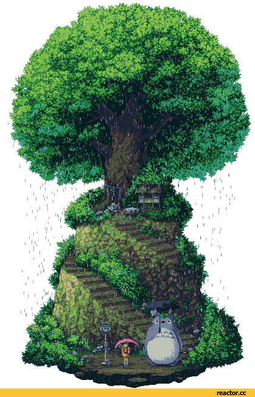

Olá pequenos gafanhotos! Futuros masters devs cyberpunks falando aqui. Estamos a 30 anos na frente de vocês, e finalmente podemos dizer que sim, nós conseguimos fazer um belo império web de programadores altamente qualificados para um futuro tão próximo, porém não foi tão fácil quanto estou falando, passamos por diversos momentos de sentimentos únicos desde a inovação de uma empresa diferente de muitas até negações de parcerias mundiais, driblamos muitas dificuldades com a força da determinação e esforço! Encontramos pessoas que mudaram a nossa linha do tempo, fazendo com que nossa firma e mentalidade pensasse anos luz das diversas. Estamos sendo concorridos como 'best company for jobs' feita pela GPTW. Cá estou para dizer um único propósito, estamos cada vez mais nos espalhando pelos estados interiores e exteriores, e não vamos parar por aqui, isso é só o começo!
• Palavras Programadas e Criptografadas por: Alan Inhuma e Diogo Muniz.
